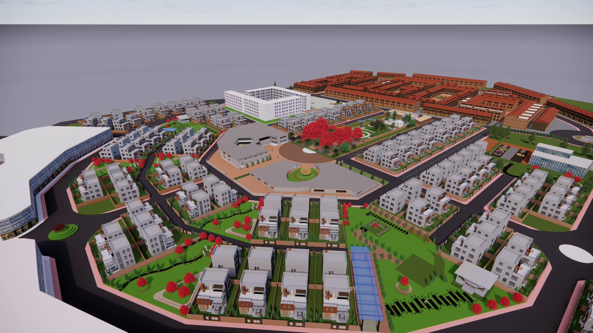
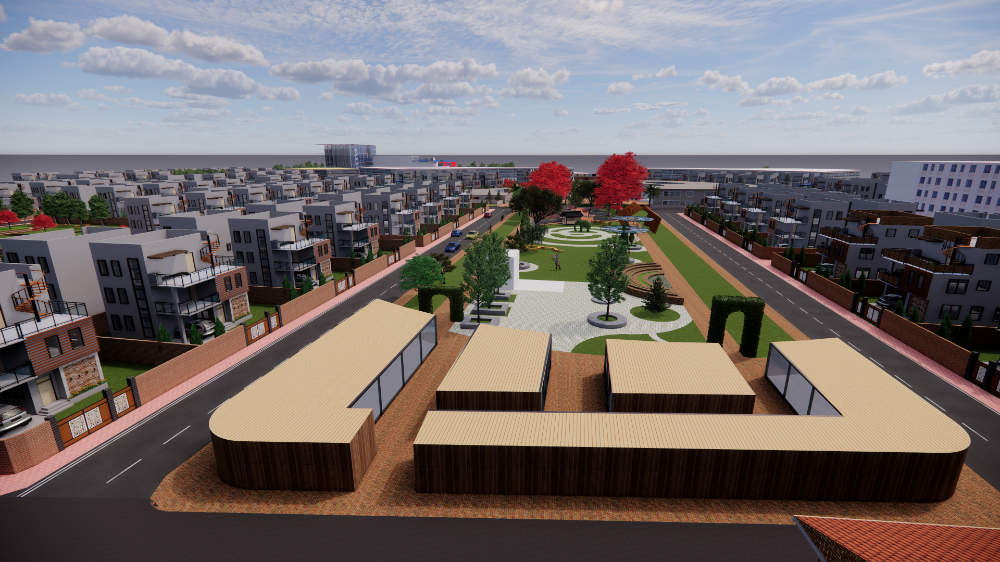
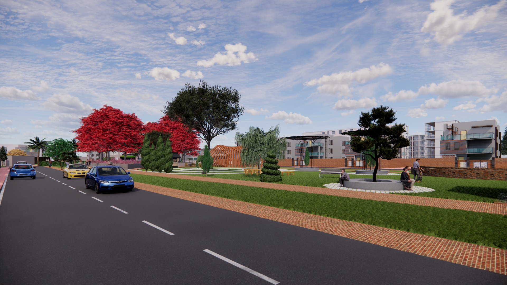

Harmony Haven

Concepts
COHESIVE COMMONS: CULTIVATING VIBRANT NEIGHBORHOOD
Aims to create a sense of unity, togetherness and liveliness among the residents.
Radial grid pattern to encourage community cohesiveness and vibrancy.
DESIGN PREPOSITIONS & STRATEGIES
SOCIAL COHESION - Creating a cohesive community involves establishing a
central gathering space, linking parks, courtyards, and plazas where residents
can come together, interact, and forge connections. This integrated approach not
only fosters a sense of unity. Also adds a traditional touch to modern buildings,
enriching the community's overall experience. RADIAL GRID PLANNING - Community focus>
turning the central area into a community focal point>>bring resident together Accessibility
> easy access to all amenities>> pedestrian friendly pathways to connect with neighbor and the
central hub Mixed used development> lively atmosphere with commercial, residential,recreational etc.

